2. Introdução ao Spring Framework
O Spring surgiu pela primeira vez em 2004 como um contentor de objetos. Desde então, evoluiu para vários ramos: Spring MVC, Spring Data, Spring Batch, ... [http://spring.io]. Neste capítulo, iremos concentrar-nos exclusivamente no contentor de objetos. Aqui estão alguns pontos-chave:
- Uma aplicação tem várias classes, e algumas delas partilham objetos que devem ser únicos (singletons). O Spring cria e gere estes singletons;
- O Spring coloca esses singletons numa estrutura chamada contexto;
- as classes acedem aos singletons da aplicação solicitando-os ao Spring através do seu nome, tipo ou ambos;
- O Spring cria os singletons e gere quaisquer dependências que possam ter: um singleton pode, de facto, ter referências a um ou mais outros singletons. Quando o Spring cria um singleton, também cria as suas dependências;
- Quando uma aplicação baseada no Spring é iniciada, pode solicitar ao Spring que crie todos os singletons da aplicação. Estes ficarão então disponíveis no contexto do Spring;
- O Spring facilita a utilização de arquiteturas em camadas e a programação baseada em interfaces. Em casos simples, cada camada é implementada por um singleton e implementa uma interface. Se a aplicação trabalhar com as interfaces das camadas em vez das suas classes de implementação, isso resulta numa arquitetura escalável que permite alterar a implementação de uma camada sem afetar as outras, graças às duas características seguintes:
- a aplicação obtém uma referência à camada através do seu nome. O Spring fornece-lhe uma referência à classe que implementa a camada;
- a aplicação utiliza esta referência como sendo a da interface da camada e não como sendo a de uma classe;
Os singletons podem ser declarados de três formas, que podem ser combinadas:
- num ficheiro XML,
- numa classe de configuração especial;
- com qualquer classe utilizando anotações;
A seguir, apresentamos três exemplos de configuração:
- [exemplo-01]: configuração centralizada num único ficheiro XML;
- [exemplo-02]: configuração centralizada numa única classe Java;
- [exemplo-03]: configuração distribuída por várias classes Java;
O último exemplo [exemplo-04] centra-se na configuração Spring de uma arquitetura em camadas. Este é o exemplo mais importante. Será utilizado de forma consistente para configurar as arquiteturas neste documento.
Estes quatro exemplos estabelecem as bases para o que se segue:
- configuração Spring e injeção de dependências;
- utilização do Maven para gerir as dependências de um projeto;
- utilização do JUnit para testar projetos;
2.1. Configurar o ambiente de desenvolvimento
É necessário ter:
- um JDK (Java Development Kit) instalado (secção 23.1);
- ter instalado o gestor de dependências Maven (secção 23.2);
- o IDE Spring Tool Suite (STS) instalado (secção 23.3);
- ter descarregado o código a partir do documento [http://tahe.developpez.com/java/spring-database];
Importe as configurações de tempo de execução da pasta [eclipse config] dos exemplos para o STS. Estas configurações são particularmente importantes. Alguns projetos requerem a passagem de argumentos para a JVM para poderem ser executados, e este tipo de configuração é geralmente uma dor de cabeça. Além disso, este documento utiliza projetos Maven. Quando se deparar com o aviso:
Nota: Prima [Alt-F5] para regenerar todos os projetos Maven.
Recomenda-se vivamente que siga este conselho. Sem esta precaução, os projetos podem apresentar erros incompreensíveis simplesmente porque as dependências do Maven entre projetos estão incorretas.
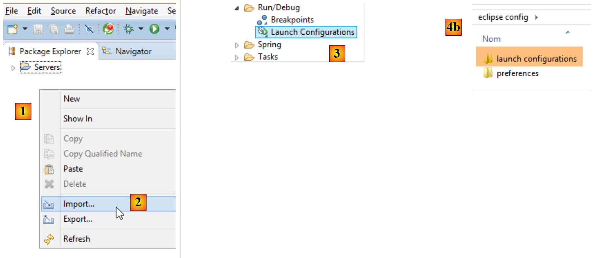 |
- Em [1], clique com o botão direito do rato no [Package Explorer];
 |
- em [4a-4b-4c], selecione a pasta [eclipse config / launch configurations] [4b] dos exemplos;
- Em [5], selecione as configurações disponíveis. Selecione todas elas;
- em [6], conclua o assistente;
- Em [7-8], visualize as configurações de execução importadas;
 |
- Em [8-9], desmarque [9] para exibir configurações de projetos não carregados no STS. Este é o caso atual;
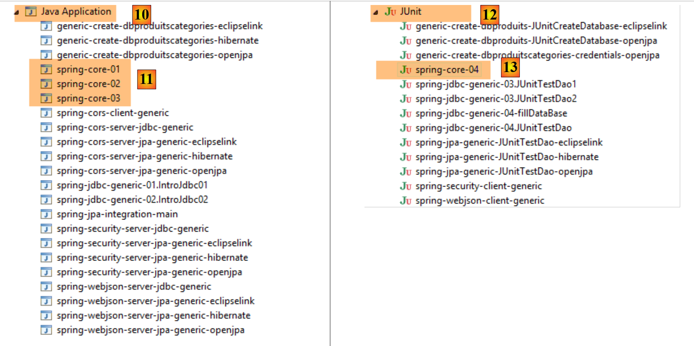 |
- em [10], as aplicações Java, e em [11], as configurações de tempo de execução para os três primeiros exemplos que iremos examinar;
- em [12], os testes JUnit, e em [13], a configuração de execução para o quarto exemplo desta secção;
Agora, crie uma variável do Eclipse chamada [M2_REPO] que irá especificar a pasta do repositório local do Maven (ver Secção 23.2). Esta variável é utilizada em várias configurações de execução:
 |
Atribuímos o valor mostrado em [6] abaixo à variável [M2_REPO]:
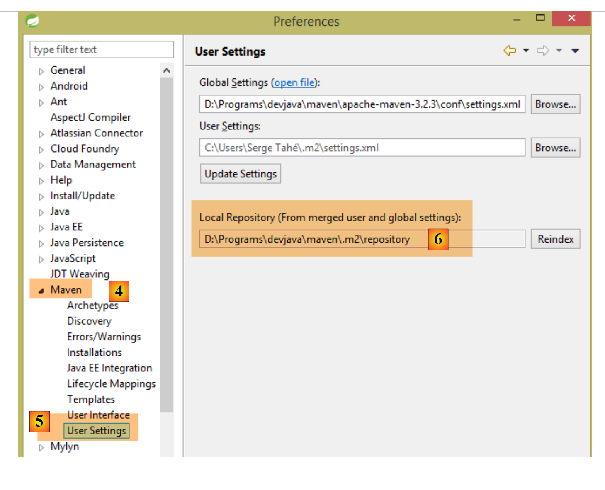 |
Agora, importe os quatro exemplos da pasta [spring-core]:
 |
- Em [1], clique com o botão direito do rato no [Package Explorer];
 |
- em [4a-4b], selecione a pasta [spring-core] que contém os exemplos;
- em [5], selecione todos os projetos na pasta e clique em [Concluir];
- em [6], os quatro projetos no [Package Explorer];
2.2. Exemplo-01
2.2.1. O Projeto Eclipse
 |
2.2.2. A classe [Person]
 |
package istia.st.spring.core;
public class Personne {
// fields
private String nom;
private String prenom;
private int age;
// manufacturers
public Personne() {
}
public Personne(String nom, String prénom, int âge) {
this.nom = nom;
this.prenom = prénom;
this.age = âge;
}
// toString
public String toString() {
return String.format("Personne[%s, %s,%d]", prenom, nom, age);
}
// getters and setters
public String getNom() {
return nom;
}
public void setNom(String nom) {
this.nom = nom;
}
public String getPrenom() {
return prenom;
}
public void setPrenom(String prenom) {
this.prenom = prenom;
}
public int getAge() {
return age;
}
public void setAge(int age) {
this.age = age;
}
}
Nota: os getters e setters podem ser gerados automaticamente da seguinte forma [1-2]:
 |
2.2.3. A classe [Apartment]
 |
package istia.st.spring.core;
public class Appartement {
// fields
private Personne proprietaire;
private int surface;
// getters and setters
public Personne getProprietaire() {
return proprietaire;
}
public void setProprietaire(Personne proprietaire) {
this.proprietaire = proprietaire;
}
public int getSurface() {
return surface;
}
public void setSurface(int surface) {
this.surface = surface;
}
// toString
public String toString() {
return String.format("Appartement[%s, %s]", proprietaire, surface);
}
}
Nota: Esta classe não tem um construtor explícito. Neste caso, o construtor padrão sem parâmetros — que não faz nada — existe sempre. Quando se criam construtores, este construtor padrão deixa de existir implicitamente. É então necessário defini-lo explicitamente:
2.2.4. O ficheiro de configuração do Spring
 |
<?xml version="1.0" encoding="UTF-8"?>
<beans xmlns="http://www.springframework.org/schema/beans" xmlns:xsi="http://www.w3.org/2001/XMLSchema-instance" xmlns:util="http://www.springframework.org/schema/util"
xsi:schemaLocation="http://www.springframework.org/schema/beans http://www.springframework.org/schema/beans/spring-beans-4.0.xsd
http://www.springframework.org/schema/util http://www.springframework.org/schema/util/spring-util-4.0.xsd">
<!-- Person 01 -->
<bean id="personne_01" class="istia.st.spring.core.Personne">
<constructor-arg index="0" value="dubois" />
<constructor-arg index="1" value="paul" />
<constructor-arg index="2" value="34" />
</bean>
<!-- Person 02 -->
<bean id="personne_02" class="istia.st.spring.core.Personne">
<property name="nom" value="martin" />
<property name="prenom" value="micheline" />
<property name="age" value="18" />
</bean>
<!-- a list of people -->
<util:list id="club">
<ref bean="personne_01" />
<ref bean="personne_02" />
</util:list>
<!-- an apartment -->
<bean id="appartement" class="istia.st.spring.core.Appartement">
<property name="surface" value="100" />
<property name="proprietaire" ref="personne_01" />
</bean>
</beans>
- linhas 2, 27: os singletons são definidos dentro de uma tag <beans>;
- linhas 6–10: cada singleton é definido por uma tag <bean>;
- linha 6: [id] é o identificador do singleton. [class] é o nome completo da classe a ser instanciada;
- linhas 7–9: os três valores a passar para o construtor da classe [Person];
- linhas 12–16: a classe [Person] é primeiro criada utilizando o seu construtor padrão [new Person()]. Em seguida, para cada tag [property], é utilizado um método setter da classe. Por exemplo, na linha 13, o método [setName("martin")] será executado. O método [setName] deve, portanto, existir. Este é um ponto importante a reter;
- linhas 18–21: a tag <util:list> é utilizada para definir um singleton que é uma lista;
- linha 19: refere-se ao singleton [person_01] definido na linha 6. Isto é o que se conhece como injeção de dependência. Podem ser utilizados dois atributos para inicializar o campo de um singleton:
- [value]: para atribuir um valor primitivo (string, número, data, etc.) ao campo,
- [ref]: para atribuir a referência de um objeto Spring ao campo;
Nota: O ficheiro de configuração do Spring pode ser gerado da seguinte forma [1-4]:
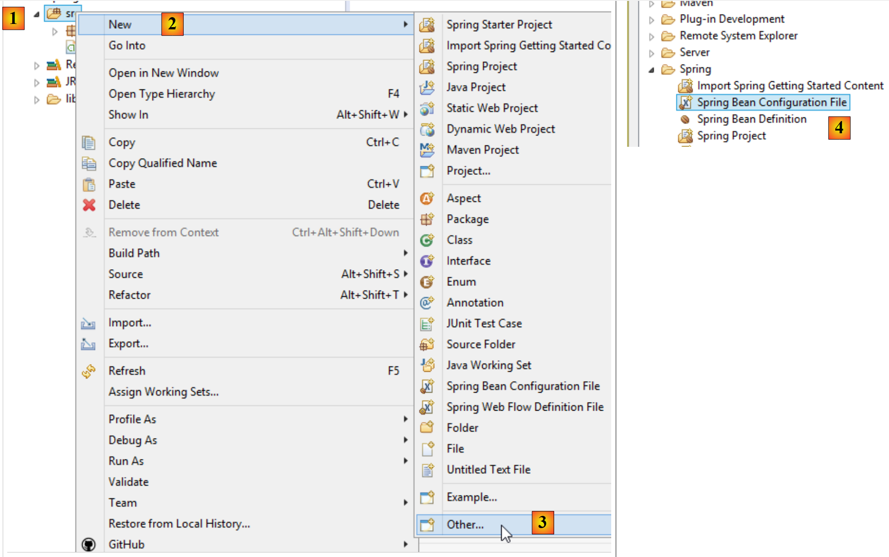 |
2.2.5. A classe executável
 |
package istia.st.spring.core;
import java.util.ArrayList;
import java.util.List;
import org.springframework.context.ApplicationContext;
import org.springframework.context.support.ClassPathXmlApplicationContext;
public class Demo01 {
@SuppressWarnings({ "unchecked", "resource" })
public static void main(String[] args) {
// spring context retrieval
ApplicationContext ctx = new ClassPathXmlApplicationContext("config-01.xml");
// beans are recovered
Personne p01 = ctx.getBean("personne_01", Personne.class);
Personne p02 = ctx.getBean("personne_02", Personne.class);
List<Personne> club = ctx.getBean("club", new ArrayList<Personne>().getClass());
Appartement appart01 = ctx.getBean(Appartement.class);
// we display them
System.out.println("personnes--------");
System.out.println(p01);
System.out.println(p02);
System.out.println("club--------");
for (Personne p : club) {
System.out.println(p);
}
System.out.println("appartement--------");
System.out.println(appart01);
// recovered beans are singletons
// they can be requested several times, but the same bean is always retrieved
Personne p01b = ctx.getBean("personne_01", Personne.class);
System.out.println(String.format("beans [p01,p01b] identiques ? %s", p01b == p01));
}
}
- linha 14: cria o contexto Spring. Todos os singletons definidos no ficheiro [config-01.xml] são então instanciados;
- linha 16: solicita uma referência ao singleton identificado por [person_01] do tipo [Person]. Este segundo parâmetro é opcional, mas, se omitido, é devolvida uma referência do tipo [Object], que deve então ser convertida para o tipo [Person];
- linha 19: não usamos o nome do bean, mas apenas o seu tipo, uma vez que existe apenas um singleton do tipo [Apartment];
- linha 18: tanto o identificador como o tipo do singleton pretendido são utilizados. O identificador é redundante, uma vez que existe apenas um singleton do tipo [new ArrayList<Person>().getClass()];
- Linhas 32–33: mostram que, se solicitarmos o mesmo singleton várias vezes, obtemos sempre a mesma referência, demonstrando assim que estamos efetivamente a lidar com um singleton. É importante compreender este ponto;
Nota: Uma classe executável pode ser gerada da seguinte forma [1-6]:
 |
 |
- A verificação [6] garante que a classe gerada irá conter um método estático [main], tornando-a executável;
2.2.6. Dependências do projeto
 |
- Dependências do Spring: [spring-core, spring-beans, spring-context, spring-expression, commons-logging];
As dependências são adicionadas ao projeto da seguinte forma:
 |
- em [1]: clique com o botão direito do rato no projeto / [Build Path] / [Configure Build Path];
 |
- em [2]: [Add JARs] se os JARs a adicionar estiverem numa pasta do projeto. Caso contrário, [Add External JARs];
 |
- em [3], selecione os JARs a adicionar ao ClassPath do projeto (aqui, eles estão na pasta [lib] dentro do projeto);
Definição: O [ClassPath] de um projeto é o conjunto de diretórios que a JVM (Java Virtual Machine) que executa o projeto pesquisa para encontrar uma classe referenciada pelo projeto. Para um projeto Eclipse, o [ClassPath] consiste no seguinte:
- a pasta [bin] do projeto;
- os elementos do [Build Path] do projeto;
A pasta [bin] é a pasta resultante da compilação da pasta [src]. Portanto, tudo o que for colocado na pasta [src] faz automaticamente parte do [ClassPath] (mesmo que não seja um ficheiro .java). Assim, no projeto anterior, o ficheiro de configuração do Spring [config-01.xml], que se encontra na pasta [src], fará parte do [ClassPath] do projeto em tempo de execução.
2.2.7. Resultados
2.3. Exemplo-02
2.3.1. O Projeto Eclipse
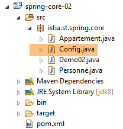 |
2.3.2. A classe de configuração do Spring
package istia.st.spring.core;
import java.util.ArrayList;
import java.util.List;
import org.springframework.context.annotation.Bean;
import org.springframework.context.annotation.Configuration;
@Configuration
public class Config {
@Bean
public Personne personne_01() {
return new Personne("Paul", "Dubois", 34);
}
@Bean
public Personne personne_02() {
return new Personne("Martin", "Micheline", 18);
}
@Bean
public List<Personne> club(Personne personne_01, Personne personne_02) {
List<Personne> personnes = new ArrayList<Personne>();
personnes.add(personne_01);
personnes.add(personne_02);
return personnes;
}
@Bean
public Appartement appartement(Personne personne_01) {
Appartement appartement = new Appartement();
appartement.setSurface(200);
appartement.setPropriétaire(personne_01);
return appartement;
}
}
- linha 9: a anotação [@Configuration] é uma anotação do Spring. Indica que a classe anotada define singletons. Estes são definidos utilizando a anotação [@Bean]. O Spring executará todos os métodos anotados com [@Bean]. Estes criam os singletons da aplicação;
- linhas 12–15: define um singleton identificado por [person_01], ou seja, o nome do método.
- linha 23: os parâmetros [person_01, person_02] têm os nomes de singletons. O Spring irá inicializá-los automaticamente com as referências desses singletons. A isto chama-se injeção de parâmetros;
Esta forma de configurar singletons é mais explícita do que a que utiliza o ficheiro XML. Na verdade, estamos a reproduzir o que o Spring fez implicitamente com base no ficheiro XML.
2.3.3. A classe executável
 |
package istia.st.spring.core;
import java.util.ArrayList;
import java.util.List;
import org.springframework.context.annotation.AnnotationConfigApplicationContext;
public class Demo02 {
@SuppressWarnings({ "unchecked", "resource" })
public static void main(String[] args) {
// spring context retrieval
AnnotationConfigApplicationContext ctx = new AnnotationConfigApplicationContext(Config.class);
// beans are recovered
Personne p01 = ctx.getBean("personne_01", Personne.class);
Personne p02 = ctx.getBean("personne_02", Personne.class);
List<Personne> club = ctx.getBean("club", new ArrayList<Personne>().getClass());
Appartement appart01 = ctx.getBean(Appartement.class);
// we display them
System.out.println("personnes--------");
System.out.println(p01);
System.out.println(p02);
System.out.println("club--------");
for (Personne p : club) {
System.out.println(p);
}
System.out.println("appartement--------");
System.out.println(appart01);
// recovered beans are singletons
// they can be requested several times, but the same bean is always retrieved
Personne p01b = ctx.getBean("personne_01", Personne.class);
System.out.println(String.format("beans [p01,p01b] identiques ? %s", p01b == p01));
}
}
- A linha 13 faz com que todos os beans definidos na classe [Config] sejam instanciados;
- o resto do código permanece inalterado;
2.3.4. Dependências do projeto
 | 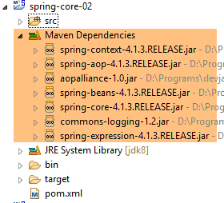 |
As dependências são definidas pelo seguinte ficheiro [pom.xml]:
<project xmlns="http://maven.apache.org/POM/4.0.0" xmlns:xsi="http://www.w3.org/2001/XMLSchema-instance"
xsi:schemaLocation="http://maven.apache.org/POM/4.0.0 http://maven.apache.org/xsd/maven-4.0.0.xsd">
<modelVersion>4.0.0</modelVersion>
<groupId>istia.st.spring.core</groupId>
<artifactId>spring-core-02</artifactId>
<version>0.0.1-SNAPSHOT</version>
<name>spring-core-02</name>
<description>Introduction à Spring</description>
<properties>
<project.build.sourceEncoding>UTF-8</project.build.sourceEncoding>
<java.version>1.7</java.version>
</properties>
<dependencies>
<!-- Spring -->
<dependency>
<groupId>org.springframework</groupId>
<artifactId>spring-context</artifactId>
<version>4.1.3.RELEASE</version>
</dependency>
</dependencies>
<!-- plugins -->
<build>
<plugins>
<plugin>
<artifactId>maven-assembly-plugin</artifactId>
<configuration>
<descriptorRefs>
<descriptorRef>jar-with-dependencies</descriptorRef>
</descriptorRefs>
</configuration>
</plugin>
<plugin>
<groupId>org.apache.maven.plugins</groupId>
<artifactId>maven-surefire-plugin</artifactId>
<version>2.18.1</version>
</plugin>
</plugins>
</build>
</project>
Gerir manualmente as dependências de um projeto torna-se uma dor de cabeça quando se utilizam bibliotecas Java cujas dependências são desconhecidas. Por exemplo, o framework [Hibernate], que gere o acesso à base de dados, tem dezenas de dependências. O projeto [Maven] resolve este problema. Especifica-se a dependência necessária. Esta é automaticamente pesquisada nos repositórios Maven distribuídos pela Internet. Se a dependência solicitada tiver as suas próprias dependências, estas também são descarregadas automaticamente. Estas dependências descarregadas são armazenadas num repositório local na máquina. Se, posteriormente, outra aplicação necessitar da mesma dependência, esta não será descarregada, mas sim recuperada do repositório local. Uma dependência é caracterizada pelos seguintes elementos:
- linha 17: uma tag <dependency>;
- linha 18: um atributo [groupId] que geralmente identifica a empresa que criou a dependência;
- linha 19: um atributo [artifactId] que identifica a dependência;
- linha 20: um atributo [version] que identifica a versão desejada;
A geração do projeto irá, por si só, produzir um componente Maven definido pelas linhas 4–8:
- linhas 4–6: os atributos [groupId, artifactId, version] que acabámos de descrever;
- linhas 7–8: são atributos opcionais;
Voltaremos ao papel das linhas 24–40 um pouco mais tarde. Para converter um projeto Eclipse padrão num projeto Maven, é necessário fazer duas coisas:
- criar o ficheiro [pom.xml] mostrado acima;
- declarar que o projeto é agora um projeto Maven [1-4]:
 |
O ícone de um projeto Maven apresenta um M [4]. O S indica que o projeto contém componentes Spring. Não é recomendável converter (como acabámos de fazer) um projeto Eclipse num projeto Maven, pois o projeto ficará então sem a estrutura esperada para um projeto Maven, o que por vezes pode levar a problemas inesperados.
2.3.5. Gerar o artefacto Maven do projeto
Referimo-nos ao elemento definido pelas linhas 4–6 do ficheiro [pom.xml] como o artefacto Maven do projeto:
<groupId>istia.st.spring.core</groupId>
<artifactId>spring-core-02</artifactId>
<version>0.0.1-SNAPSHOT</version>
Para gerar este artefacto, as seguintes linhas 3–7 devem estar presentes no ficheiro [pom.xml]:
<build>
<plugins>
<plugin>
<groupId>org.apache.maven.plugins</groupId>
<artifactId>maven-surefire-plugin</artifactId>
<version>2.18.1</version>
</plugin>
</plugins>
</build>
Estes definem o plugin Maven capaz de gerar o artefacto do projeto. Em seguida, procedemos da seguinte forma:
 |
O artefacto gerado desta forma é adicionado ao repositório local do Maven. A sua localização pode ser encontrada na configuração do Eclipse:
 |
Pode então verificar se o artefacto Maven foi instalado corretamente:
 |
A partir de agora, outro projeto Maven local poderá utilizar este arquivo.
2.4. Exemplo-03
2.4.1. O Projeto Eclipse
Desta vez, vamos criar um projeto Maven [1-8]:
 |
 |
- em [3b]: especifique uma pasta vazia onde o projeto será gerado;
 |
- em [4]: o identificador do grupo Maven ao qual o projeto pertencerá;
- em [5]: o nome do artefacto Maven produzido:
- em [6]: a sua versão;
- em [7]: o seu tipo de pacote (outras opções incluem war, ear, apk, etc.);
- em [8]: o projeto assim criado;
Por predefinição, um projeto Maven tem uma estrutura de diretórios específica:
- [src/main/java]: o código-fonte do projeto. O resultado compilado a partir destas fontes será colocado na pasta [target/classes] do projeto;
- [src/main/resources]: recursos que devem estar no classpath do projeto, mas que não são ficheiros de código-fonte Java. Serão copiados tal como estão para a pasta [target/classes] do projeto;
- [src/test/java]: o código-fonte para os testes do projeto. O resultado compilado a partir destas fontes irá para a pasta [target/test-classes] do projeto. Estes elementos não estão incluídos no arquivo Maven do projeto;
- [src / test / resources]: recursos que devem estar no classpath do projeto para testes, mas que não são ficheiros fonte Java. Serão copiados tal como estão para a pasta [target/test-classes] do projeto;
Concluímos o projeto da seguinte forma:
 |
2.4.2. A configuração do Maven
Um ficheiro [pom.xml] é gerado por predefinição. Modificamo-lo da seguinte forma:
<project xmlns="http://maven.apache.org/POM/4.0.0" xmlns:xsi="http://www.w3.org/2001/XMLSchema-instance"
xsi:schemaLocation="http://maven.apache.org/POM/4.0.0 http://maven.apache.org/xsd/maven-4.0.0.xsd">
<modelVersion>4.0.0</modelVersion>
<groupId>istia.st.spring.core</groupId>
<artifactId>spring-core-03</artifactId>
<version>0.0.1-SNAPSHOT</version>
<name>spring-core-03</name>
<description>Introduction à Spring</description>
<properties>
<project.build.sourceEncoding>UTF-8</project.build.sourceEncoding>
<java.version>1.8</java.version>
</properties>
<!-- maven parent project -->
<parent>
<groupId>org.springframework.boot</groupId>
<artifactId>spring-boot-starter-parent</artifactId>
<version>1.2.3.RELEASE</version>
</parent>
<dependencies>
<!-- Spring Context -->
<dependency>
<groupId>org.springframework</groupId>
<artifactId>spring-context</artifactId>
</dependency>
<!-- logs -->
<dependency>
<groupId>org.springframework.boot</groupId>
<artifactId>spring-boot-starter-logging</artifactId>
</dependency>
</dependencies>
<!-- plugins -->
<build>
<plugins>
<!-- to generate the project archive with its dependencies -->
<plugin>
<artifactId>maven-assembly-plugin</artifactId>
<configuration>
<descriptorRefs>
<descriptorRef>jar-with-dependencies</descriptorRef>
</descriptorRefs>
</configuration>
</plugin>
<!-- to install the project artifact in the local Maven repository -->
<plugin>
<groupId>org.apache.maven.plugins</groupId>
<artifactId>maven-surefire-plugin</artifactId>
<version>2.18.1</version>
</plugin>
</plugins>
</build>
</project>
- linha 11: o projeto está codificado em UTF-8;
- linha 12: o JDK 1.8 é utilizado para compilar o projeto;
- linhas 16–20: para projetos que utilizam bibliotecas Spring, é conveniente utilizar um projeto Maven pai chamado [spring-boot-starter-parent]. Este define as versões de várias bibliotecas Spring, bem como as das suas dependências. Isto elimina a necessidade de as definir na secção de dependências. Assim, nas linhas 24–27, não especificamos a versão desejada de [spring-context]. Será a definida pelo projeto pai [spring-boot-starter-parent]. Esta técnica elimina a necessidade de se preocupar com potenciais incompatibilidades de versão entre dependências. As definidas pelo projeto pai são compatíveis entre si;
- linhas 29–32: O Spring escreve uma quantidade significativa de informação na consola através de uma biblioteca de registo. Esta biblioteca é importada aqui;
- linhas 40–47: um plugin do Maven, que discutiremos mais adiante;
- linhas 50–52: o plugin para gerar o artefacto Maven do projeto;
2.4.3. A classe de configuração do Spring
 |
A classe [Config] é a seguinte:
package istia.st.spring.core.config;
import istia.st.spring.core.entities.Personne;
import java.util.ArrayList;
import java.util.List;
import org.springframework.context.annotation.Bean;
import org.springframework.context.annotation.ComponentScan;
import org.springframework.context.annotation.Configuration;
@Configuration
@ComponentScan({ "spring.core.entities" })
public class Config {
@Bean
public Personne personne_01() {
return new Personne("Paul", "Dubois", 34);
}
@Bean
public Personne personne_02() {
return new Personne("Martin", "Micheline", 18);
}
@Bean
public List<Personne> club(Personne personne_01, Personne personne_02) {
List<Personne> personnes = new ArrayList<Personne>();
personnes.add(personne_01);
personnes.add(personne_02);
return personnes;
}
@Bean
public int mySurface() {
return 200;
}
}
- Aqui vemos o código anteriormente comentado com duas novas adições:
- linha 13: indica que existem outros beans para instanciar no pacote [spring.core.entities],
- linhas 34–37: um bean [mySurface];
2.4.4. A classe [Apartment]
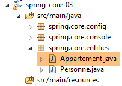 |
package spring.core.entities;
import org.springframework.beans.factory.annotation.Autowired;
import org.springframework.beans.factory.annotation.Qualifier;
import org.springframework.stereotype.Component;
@Component
public class Appartement {
// fields injected by Spring
@Autowired
@Qualifier("personne_01")
private Personne propriétaire;
@Autowired
@Qualifier("mySurface")
private int surface;
// getters and setters
public Personne getPropriétaire() {
return propriétaire;
}
public void setPropriétaire(Personne propriétaire) {
this.propriétaire = propriétaire;
}
public int getSurface() {
return surface;
}
public void setSurface(int surface) {
this.surface = surface;
}
// toString
public String toString() {
return String.format("Appartement[%s, %s]", propriétaire, surface);
}
}
- linha 7: a anotação [@Component] indica ao Spring que a classe é um singleton que a estrutura deve instanciar e gerir. Este singleton será encontrado porque escrevemos [@ComponentScan({ "istia.st.spring.core.entities" })] na classe [Config];
- linha 11: pede ao Spring para injetar a referência de um dos singletons no campo. Isto pode ser definido de duas formas:
- pelo seu identificador (linhas 12, 16),
- pelo seu tipo, se houver apenas um singleton desse tipo;
2.4.5. Executar o projeto
A execução do projeto produz a seguinte saída na consola:
- Linhas 1-3: O Spring gera um número muito grande de registos, várias dezenas de linhas. Estes registos podem ser muito úteis para depurar um projeto que não está a funcionar. Quando estiver a funcionar, pode reduzir os registos da seguinte forma:
 |
Na pasta [src/main/resources], crie o seguinte ficheiro [logback.xml]:
<configuration>
<appender name="STDOUT" class="ch.qos.logback.core.ConsoleAppender">
<!-- encoders are by default assigned the type
ch.qos.logback.classic.encoder.PatternLayoutEncoder -->
<encoder>
<pattern>%d{HH:mm:ss.SSS} [%thread] %-5level %logger{36} - %msg%n</pattern>
</encoder>
</appender>
<!-- log level control -->
<root level="info"> <!-- info, debug, warn -->
<appender-ref ref="STDOUT" />
</root>
</configuration>
- A linha 12 define o nível de registo. [debug] é um nível muito detalhado, [info] muito menos;
Aqui estão os resultados com [level=info]:
Agora existe apenas uma linha de registos.
2.4.6. Gerar o arquivo do projeto com as suas dependências
O arquivo criado no projeto anterior também pode ser usado por um projeto Eclipse não-Maven. Alguns projetos utilizam muitas bibliotecas, e pode ser complicado não esquecer nenhuma. É aqui que o Maven faz maravilhas, pois basta nomear a dependência de nível superior para que as de nível inferior sejam automaticamente adicionadas ao Classpath do projeto. Quando um projeto Eclipse não-Maven precisa de utilizar os arquivos de um projeto Maven, é possível gerar o artefacto deste último com todas as suas dependências (o que não era o caso no projeto anterior). Para esta geração, as seguintes linhas 3–10 devem estar presentes no ficheiro [pom.xml]:
<build>
<plugins>
<plugin>
<artifactId>maven-assembly-plugin</artifactId>
<configuration>
<descriptorRefs>
<descriptorRef>jar-with-dependencies</descriptorRef>
</descriptorRefs>
</configuration>
</plugin>
<plugin>
<groupId>org.apache.maven.plugins</groupId>
<artifactId>maven-surefire-plugin</artifactId>
<version>2.18.1</version>
</plugin>
</plugins>
</build>
Estes definem o plugin Maven capaz de gerar o artefacto do projeto juntamente com as suas dependências. Em seguida, proceda da seguinte forma [1-6]:
 |
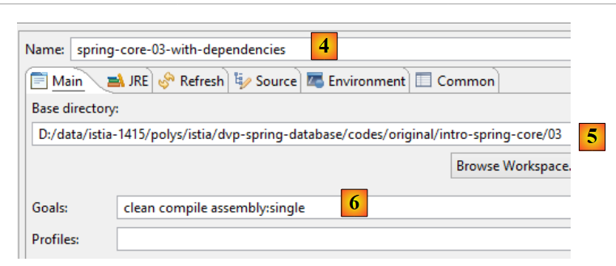 |
- [4-6] representam uma configuração de compilação do Maven;
- em [4], introduza qualquer nome;
- em [5], especifique a pasta do projeto;
- em [6], introduza os objetivos do Maven:
- [clean]: a pasta [target] do projeto é eliminada;
- [compile]: o projeto é compilado. Os resultados da compilação são colocados numa pasta [target] regenerada;
- [assembly:single]: as classes do projeto e as suas dependências são colocadas num único arquivo JAR na pasta [target];
Após a execução, obtém-se o seguinte resultado:
 |
Um arquivo JAR é um ficheiro compactado que pode ser aberto com um programa de descompactação. Depois de descompactar o arquivo anterior, obtém-se a seguinte estrutura de diretórios:
- em [8], as classes das dependências do projeto;
- em [9], as classes do próprio projeto;
2.5. Exemplo-04
2.5.1. Objetivo
Este exemplo baseia-se num apresentado no documento [Introdução ao Spring IoC], que demonstra a contribuição do Spring para a configuração de arquiteturas multicamadas. No documento original, o exemplo utiliza uma configuração Spring do tipo « » definida num ficheiro XML. Aqui, implementamos o exemplo utilizando uma configuração baseada em classes Java e anotações.
Aqui, pretendemos configurar um projeto Spring para a seguinte arquitetura:
 |
Cada camada possui uma interface implementada por duas classes. Pretendemos demonstrar que, graças ao Spring, podemos alterar a implementação de uma camada sem qualquer impacto no código das outras camadas.
2.5.2. O projeto Eclipse
2.5.2.1. Geração
Criamos um novo tipo de projeto:
 |
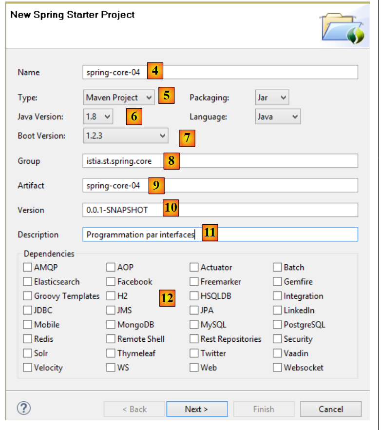 |
- em [4], introduza o nome do projeto Eclipse;
- em [5], selecione um projeto Maven;
- em [6], selecione uma versão Java >=1.7;
- em [7], selecione a versão sugerida do Spring Boot;
- as informações em [8-11] são informações do Maven;
- em [12], pode selecionar uma ou mais das dependências sugeridas. Isto irá adicionar várias dependências ao ficheiro [pom.xml] do Maven;
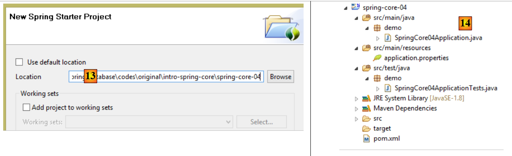 |
- Em [13], selecione uma pasta existente e vazia para hospedar o projeto;
- em [14], o projeto gerado. Vamos detalhar os seus componentes;
O projeto é um projeto Maven configurado pelo seguinte ficheiro [pom.xml]:
<?xml version="1.0" encoding="UTF-8"?>
<project xmlns="http://maven.apache.org/POM/4.0.0" xmlns:xsi="http://www.w3.org/2001/XMLSchema-instance"
xsi:schemaLocation="http://maven.apache.org/POM/4.0.0 http://maven.apache.org/xsd/maven-4.0.0.xsd">
<modelVersion>4.0.0</modelVersion>
<groupId>istia.st.spring.core</groupId>
<artifactId>spring-core-04</artifactId>
<version>0.0.1-SNAPSHOT</version>
<packaging>jar</packaging>
<name>spring-core-04</name>
<description>Programmation par interfaces</description>
<parent>
<groupId>org.springframework.boot</groupId>
<artifactId>spring-boot-starter-parent</artifactId>
<version>1.2.3.RELEASE</version>
<relativePath/> <!-- lookup parent from repository -->
</parent>
<properties>
<project.build.sourceEncoding>UTF-8</project.build.sourceEncoding>
<start-class>demo.SpringCore04Application</start-class>
<java.version>1.8</java.version>
</properties>
<dependencies>
<dependency>
<groupId>org.springframework.boot</groupId>
<artifactId>spring-boot-starter</artifactId>
</dependency>
<dependency>
<groupId>org.springframework.boot</groupId>
<artifactId>spring-boot-starter-test</artifactId>
<scope>test</scope>
</dependency>
</dependencies>
<build>
<plugins>
<plugin>
<groupId>org.springframework.boot</groupId>
<artifactId>spring-boot-maven-plugin</artifactId>
</plugin>
</plugins>
</build>
</project>
- linhas 6–12: contêm as informações introduzidas no assistente de criação do projeto;
- linhas 14–19: o projeto Maven pai, que define várias bibliotecas juntamente com as suas versões. Se alguma delas for uma dependência do projeto, será listada no ficheiro [pom.xml] sem as suas versões;
- linha 23: esta linha só é utilizada se pretender gerar um arquivo executável do projeto. Caso contrário, não é utilizada;
- linhas 28–31: as dependências mínimas para um projeto Spring Boot. Note que não selecionámos nenhuma dependência da lista de caixas de seleção;
- Linhas 33–37: a dependência necessária para gerir os testes unitários JUnit [http://junit.org/] integrados com o Spring. A linha 36 indica que a dependência é necessária apenas para testes. Consequentemente, não será incluída no arquivo do projeto;
- linhas 42–45: o plugin que gera o artefacto Maven do projeto;
A lista de dependências fornecida por este ficheiro é a seguinte [1]:
 |
Veremos que estas são suficientes para o que pretendemos fazer aqui.
2.5.2.2. A classe executável
 |
A classe executável [SpringCore04Application] [[2] é a seguinte:
package demo;
import org.springframework.boot.SpringApplication;
import org.springframework.boot.autoconfigure.SpringBootApplication;
@SpringBootApplication
public class SpringCore04Application {
public static void main(String[] args) {
SpringApplication.run(SpringCore04Application.class, args);
}
}
- Linha 6: A anotação [@SpringBootApplication] é uma forma abreviada das três anotações [@Configuration, @EnableAutoConfiguration, @ComponentScan], o que significa:
- que a classe [SpringCore04Application] é uma classe de configuração Spring;
- que o Spring Boot é instruído a realizar configurações com base nas classes que encontra no classpath do projeto, que neste caso são as dependências do Maven;
- que deve examinar o diretório atual (o da classe [SpringCore04Application]) para encontrar quaisquer outros componentes Spring;
- linha 10: o método estático [SpringApplication.run] é executado. O seu primeiro parâmetro é uma classe de configuração Spring, neste caso a classe [SpringCore04Application]. O seu segundo parâmetro é a lista de argumentos passados ao método [main] (linha 9). O método estático [SpringApplication.run] é responsável por criar o contexto Spring, ou seja, criar os vários beans encontrados nas classes de configuração ou nos diretórios analisados pela anotação [@ComponentScan]. O método [main] aqui não faz mais nada. Para lhe dar um pouco mais de substância, vamos modificá-lo da seguinte forma:
package demo;
import org.springframework.boot.SpringApplication;
import org.springframework.boot.autoconfigure.SpringBootApplication;
import org.springframework.context.ConfigurableApplicationContext;
@SpringBootApplication
public class SpringCore04Application {
public static void main(String[] args) {
// spring context instantiation
ConfigurableApplicationContext context = SpringApplication.run(SpringCore04Application.class, args);
// context display
System.out.println("---------------- Liste des beans Spring");
for (String beanName : context.getBeanDefinitionNames()) {
System.out.println(beanName);
}
// closing context
context.close();
}
}
- linha 12: o método estático [SpringApplication.run] devolve o contexto Spring que construiu;
- linhas 15–17: os nomes de todos os beans neste contexto são exibidos;
A aplicação pode ser executada da seguinte forma [1-3]. O método padrão [Executar como aplicação Java] também é válido.
 |
O resultado obtido é o seguinte:
- linhas 14–28: beans do contexto Spring. Não sabemos qual é a sua função. Encontramos o bean [springCore04Application] na linha 18, que, devido à sua anotação [@SpringBootApplication], torna-se automaticamente um bean Spring;
- as outras linhas são registos do Spring ao nível [INFO]. Como já vimos, estes registos podem ser controlados pelo ficheiro [logback.xml] colocado no classpath do projeto:
 |
<configuration>
<appender name="STDOUT" class="ch.qos.logback.core.ConsoleAppender">
<!-- encoders are by default assigned the type
ch.qos.logback.classic.encoder.PatternLayoutEncoder -->
<encoder>
<pattern>%d{HH:mm:ss.SSS} [%thread] %-5level %logger{36} - %msg%n</pattern>
</encoder>
</appender>
<!-- log level control -->
<root level="warn"> <!-- info, debug, warn -->
<appender-ref ref="STDOUT" />
</root>
</configuration>
Se, na linha 12 acima, definirmos o nível como [warn] em vez de [info], obtemos o seguinte resultado:
Os registos desapareceram. Apenas aparecem mensagens de nível [warn], e não havia nenhuma aqui.
2.5.3. Implementação das diferentes camadas da arquitetura
 |
Vamos agora implementar as três camadas da arquitetura acima:
 |
A camada [DAO] é implementada pelo pacote [spring.core.dao]. Este fornece a seguinte interface [IDao]:
package spring.core.dao;
public interface IDao {
public int doSomethingInDaoLayer(int a, int b);
}
Esta interface tem duas implementações: [Dao1] e [Dao2]:
package spring.core.dao;
public class Dao1 implements IDao {
public int doSomethingInDaoLayer(int a, int b) {
return a+b;
}
}
package spring.core.dao;
public class Dao2 implements IDao {
public int doSomethingInDaoLayer(int a, int b) {
return a-b;
}
}
A camada [business] é implementada pelo pacote [spring.core.business]. Este fornece a seguinte interface [IMetier]:
package spring.core.metier;
public interface IMetier {
public int doSomethingInMetierLayer(int a, int b);
}
Esta interface tem duas implementações: [Business1] e [Business2]:
package spring.core.metier;
import spring.core.dao.IDao;
public class Metier1 implements IMetier {
private IDao dao;
public int doSomethingInMetierLayer(int a, int b) {
a++;
b++;
return dao.doSomethingInDaoLayer(a, b);
}
public void setDao(IDao dao) {
this.dao = dao;
}
}
package spring.core.metier;
import spring.core.dao.IDao;
public class Metier2 implements IMetier {
private IDao dao;
public int doSomethingInMetierLayer(int a, int b) {
a--;
b++;
return dao.doSomethingInDaoLayer(a, b);
}
public void setDao(IDao dao) {
this.dao = dao;
}
}
A camada [UI] é implementada pelo pacote [spring.core.ui]. Este fornece a seguinte interface [IUi]:
package spring.core.ui;
public interface IUi {
public int doSomethingInUiLayer(int a, int b);
}
Esta interface tem duas implementações: [Ui1] e [Ui2]:
package spring.core.ui;
import spring.core.metier.IMetier;
public class Ui1 implements IUi {
private IMetier metier;
public int doSomethingInUiLayer(int a, int b) {
a++;
b++;
return metier.doSomethingInMetierLayer(a, b);
}
public void setMetier(IMetier metier) {
this.metier = metier;
}
}
package spring.core.ui;
import spring.core.metier.IMetier;
public class Ui2 implements IUi {
private IMetier metier;
public int doSomethingInUiLayer(int a, int b) {
a--;
b++;
return metier.doSomethingInMetierLayer(a, b);
}
public void setMetier(IMetier metier) {
this.metier = metier;
}
}
2.5.4. Configuração do projeto Spring
 |
A classe de configuração [Config] é a seguinte:
package spring.core.config;
import org.springframework.context.annotation.Bean;
import org.springframework.context.annotation.Configuration;
import spring.core.dao.Dao1;
import spring.core.dao.Dao2;
import spring.core.dao.IDao;
import spring.core.metier.IMetier;
import spring.core.metier.Metier1;
import spring.core.metier.Metier2;
import spring.core.ui.IUi;
import spring.core.ui.Ui1;
import spring.core.ui.Ui2;
@Configuration
public class Config {
// -------------- implementation [Ui1, Metier1, Dao1]
@Bean
public IDao dao1() {
return new Dao1();
}
@Bean
public IMetier metier1(IDao dao1) {
Metier1 metier = new Metier1();
metier.setDao(dao1);
return metier;
}
@Bean
public IUi ui1(IMetier metier1) {
Ui1 ui = new Ui1();
ui.setMetier(metier1);
return ui;
}
// -------------- implementation [Ui2, Metier2, Dao2]
@Bean
public IDao dao2() {
return new Dao2();
}
@Bean
public IMetier metier2(IDao dao2) {
Metier2 metier = new Metier2();
metier.setDao(dao2);
return metier;
}
@Bean
public IUi ui2(IMetier metier2) {
Ui2 ui = new Ui2();
ui.setMetier(metier2);
return ui;
}
}
- Linhas 20–23: O bean denominado [dao1] (nome do método) é uma instância da classe [Dao1] (linha 22), que é considerada uma implementação da interface [IDao] (linha 21). O bean [dao1] é, portanto, visto como uma instância de uma interface (a terminologia é incorreta, mas compreensível) e não como uma instância de uma classe. Este é um ponto importante a compreender. Todos os outros beans também serão instâncias de interfaces;
- linhas 25–30: uma instância da interface [IMetier] implementada pela classe [Metier1];
- linhas 32–37: uma instância da interface [IUi] implementada pela classe [Ui1];
- linhas 20–37: implementam as camadas [UI, Business, DAO] com instâncias [Ui1, Metier1, Dao1];
- linhas 40-57: implementar as camadas [UI, Business, DAO] com instâncias [Ui2, Business2, Dao2];
2.5.5. Teste unitário [JUnitTest]
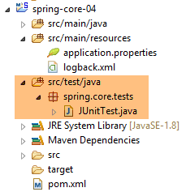 |
A classe [JUnitTest] está localizada no ramo [src/test/java] do projeto Maven. Os elementos deste ramo não são incluídos no arquivo final do projeto. O seu código é o seguinte:
package spring.core.tests;
import org.junit.Assert;
import org.junit.Test;
import org.junit.runner.RunWith;
import org.springframework.beans.factory.annotation.Autowired;
import org.springframework.beans.factory.annotation.Qualifier;
import org.springframework.boot.test.SpringApplicationConfiguration;
import org.springframework.test.context.junit4.SpringJUnit4ClassRunner;
import spring.core.config.Config;
import spring.core.dao.IDao;
import spring.core.metier.IMetier;
import spring.core.ui.IUi;
@SpringApplicationConfiguration(classes = { Config.class })
@RunWith(SpringJUnit4ClassRunner.class)
public class JUnitTest {
...
}
- Linha 16: A anotação [@SpringApplicationConfiguration] faz parte do projeto Spring Boot Test (linha 8). É introduzida pela seguinte dependência no ficheiro [pom.xml]:
<dependency>
<groupId>org.springframework.boot</groupId>
<artifactId>spring-boot-starter</artifactId>
</dependency>
Esta anotação toma como parâmetro a lista de classes de configuração a serem utilizadas para construir o contexto Spring necessário para o teste. Aqui utilizamos a classe de configuração [Config] já apresentada;
- linha 17: a anotação [@RunWith] é uma anotação JUnit (linha 5). O seu parâmetro é a classe responsável pela execução dos testes, em vez da classe padrão do framework JUnit. Esta classe é uma classe Spring (linha 9). Ela utilizará as anotações Spring presentes na classe de teste;
A classe completa é a seguinte
...
@SpringApplicationConfiguration(classes = { Config.class })
@RunWith(SpringJUnit4ClassRunner.class)
public class JUnitTest {
// layer [UI]
@Autowired
@Qualifier("ui1")
private IUi ui1;
@Autowired
@Qualifier("ui2")
private IUi ui2;
// business] layer
@Autowired
@Qualifier("metier1")
private IMetier metier1;
@Autowired
@Qualifier("metier2")
private IMetier metier2;
// layer [dao]
@Autowired
@Qualifier("dao1")
private IDao dao1;
@Autowired
@Qualifier("dao2")
private IDao dao2;
@Test
public void testDao() {
Assert.assertEquals(30, dao1.doSomethingInDaoLayer(10, 20));
Assert.assertEquals(-10, dao2.doSomethingInDaoLayer(10, 20));
}
@Test
public void testMetier() {
Assert.assertEquals(32, metier1.doSomethingInMetierLayer(10, 20));
Assert.assertEquals(-12, metier2.doSomethingInMetierLayer(10, 20));
}
@Test
public void testUI() {
Assert.assertEquals(34, ui1.doSomethingInUiLayer(10, 20));
Assert.assertEquals(-14, ui2.doSomethingInUiLayer(10, 20));
}
}
- linhas 8–10: injetamos (linha 8) o bean denominado (linha 9) [ui1]. Note-se que, na linha 10, injetamos uma instância de interface em vez de uma instância de classe;
- linhas 21–32: os outros beans definidos na classe [Config] são injetados da mesma forma;
- linha 34: a anotação [@Test] designa um método a ser executado durante os testes. Outras anotações possíveis são as seguintes:
- [@BeforeClass]: método a ser executado antes do início dos testes;
- [@AfterClass]: método a ser executado assim que todos os testes estiverem concluídos;
- [@Before]: método a ser executado antes de cada teste;
- [@After]: método a ser executado após cada teste;
- linha 36: verificamos se a chamada [dao1.doSomethingInDaoLayer(10, 20)] retorna 30. Por convenção, o primeiro parâmetro é o valor esperado e o segundo é o valor real;
- linha 36: testa a instância [dao1] da interface [IDao];
- linha 37: testa a instância [dao2] da interface [IDao];
- linha 42: testa a instância [metier1] da interface [IMetier];
- linha 43: testa a instância [business2] da interface [IBusiness];
- linha 48: testa a instância [ui1] da interface [IUi];
- linha 36: testa a instância [ui2] da interface [IUi];
As asserções que podem ser utilizadas num método de teste são as seguintes:
- assertEquals(expressão1, expressão2): verifica se os valores das duas expressões são iguais. São aceites muitos tipos de expressão (int, String, float, double, boolean, char, short). Se as duas expressões não forem iguais, é lançada uma exceção do tipo [AssertionFailedError],
- assertEquals(real1, real2, delta): verifica se dois números reais são iguais com uma tolerância de delta, ou seja, abs(real1-real2) <= delta. Por exemplo, pode-se escrever assertEquals(real1, real2, 1E-6) para verificar se dois valores são iguais com uma tolerância de 10⁻⁶,
- assertEquals(message, expression1, expression2) e assertEquals(message, real1, real2, delta) são variantes que permitem especificar a mensagem de erro a ser associada à exceção [AssertionFailedError] lançada quando o método [assertEquals] falha,
- assertNotNull(Object) e assertNotNull(message, Object): verifica se a referência Object não é nula,
- assertNull(Object) e assertNull(message, Object): verifica se a referência Object é nula,
- assertSame(Object1, Object2) e assertSame(message, Object1, Object2): verifica se as referências Object1 e Object2 apontam para o mesmo objeto,
- assertNotSame(Object1, Object2) e assertNotSame(message, Object1, Object2): verifica se as referências Object1 e Object2 não apontam para o mesmo objeto;
Para executar o teste, proceda da seguinte forma:
 |
O resultado obtido é o seguinte:
 |
Aqui, todos os testes foram aprovados. O que este exemplo demonstra? Demonstra a flexibilidade proporcionada pelo framework Spring na configuração de uma arquitetura em camadas. Pode optar por utilizar a implementação [Ui1, Metier1, Dao1] ou [Ui2, Metier2, Dao2] simplesmente configurando-a. Assim, no teste JUnit anterior, se mantiver apenas a injeção dos beans [ui1, metier1, dao1], estará a trabalhar com a primeira arquitetura. Para alterar a arquitetura, basta alterar os beans injetados. Isto é feito sem modificar o código das camadas que implementam as interfaces. Este tipo de programação é chamado de programação baseada em interfaces, porque não usamos as instâncias das classes que implementam as camadas, mas sim as instâncias das suas interfaces.
2.6. Conclusão
- O Spring gere objetos que são singletons (uma única instância). O Spring também gere objetos que são instanciados cada vez que uma instância é solicitada ao Spring. Este caso também será apresentado neste documento;
- estes objetos podem ser declarados de várias formas que podem ser combinadas:
- num ficheiro XML,
- numa classe Java anotada com [@Configuration],
- com qualquer classe Java anotada com [@Component, @Service, ...];
- um objeto Spring pode ser injetado noutro objeto Spring utilizando a anotação [@Autowired]. Isto é designado por injeção de dependências (DI);
- O Spring é muito útil para configurar arquiteturas em camadas quando utilizado em conjunto com o paradigma de programação baseado em interfaces;